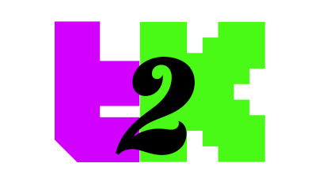

Twitch → Kick · mode simple
Sur twitch.tv/… → tape : … → kick.com/…
L’extension lit le registre public
streamers.json. Envoie ta config à
2hellv@gmail.com pour être ajouté — sans ça, les viewers
ne connaissent pas ton trigger / ta cible.
extension/).#t2k#